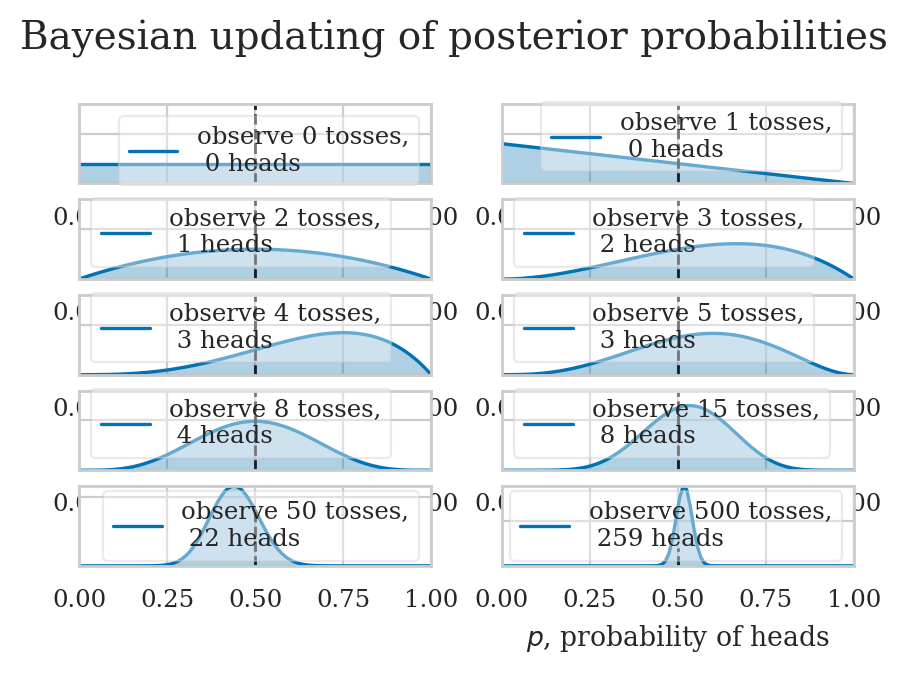
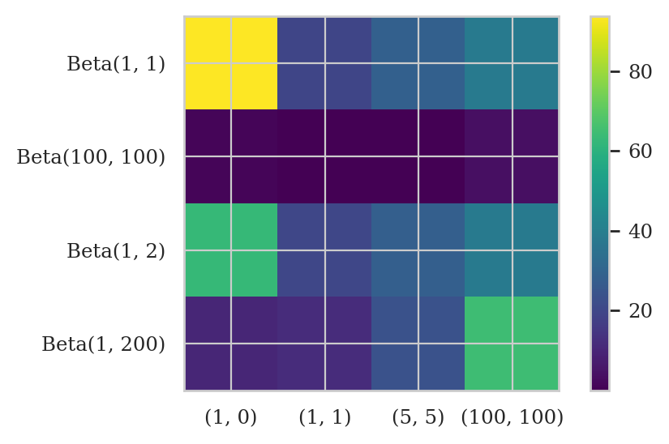
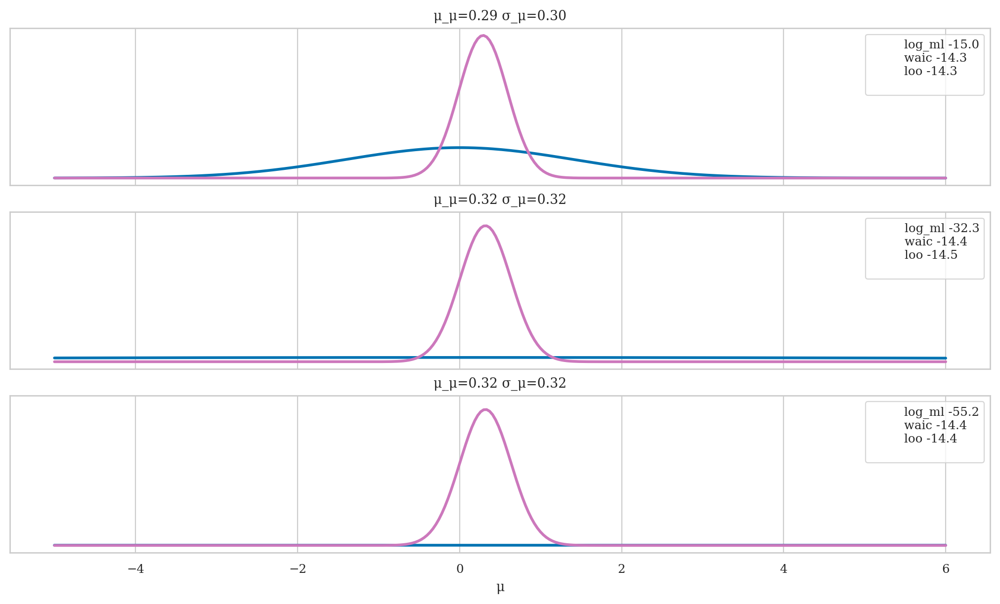
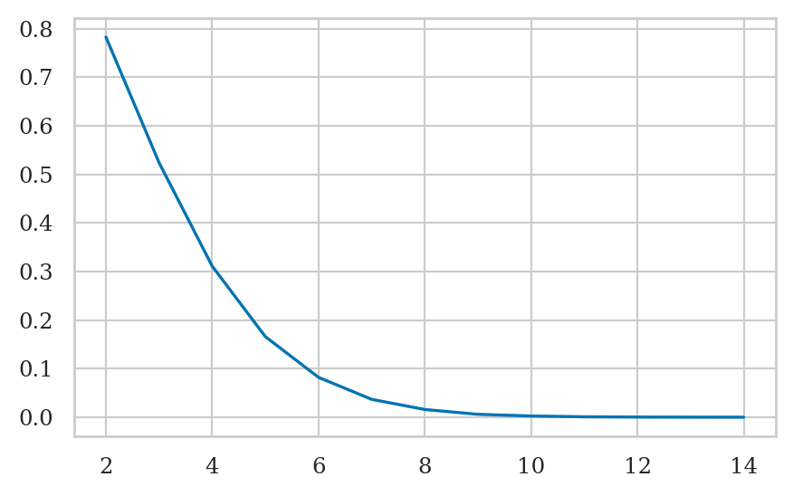

Section 5.1 — Introduction to Bayesian statistics#
This notebook contains the code examples from Section 5.1 Introduction to Bayesian statistics from the No Bullshit Guide to Statistics.
Notebook setup#
# load Python modules
import os
import numpy as np
import pandas as pd
import seaborn as sns
import matplotlib.pyplot as plt
# Figures setup
plt.clf() # needed otherwise `sns.set_theme` doesn"t work
from plot_helpers import RCPARAMS
RCPARAMS.update({"figure.figsize": (5, 3)}) # good for screen
# RCPARAMS.update({"figure.figsize": (5, 1.6)}) # good for print
sns.set_theme(
context="paper",
style="whitegrid",
palette="colorblind",
rc=RCPARAMS,
)
# High-resolution please
%config InlineBackend.figure_format = "retina"
# Where to store figures
DESTDIR = "figures/bayesian/intro"
<Figure size 640x480 with 0 Axes>
# set random seed for repeatability
np.random.seed(42)
#######################################################
# via https://nbviewer.org/github/CamDavidsonPilon/Probabilistic-Programming-and-Bayesian-Methods-for-Hackers
# /blob/master/Chapter1_Introduction/Ch1_Introduction_PyMC3.ipynb
from scipy.stats import beta
from scipy.stats import bernoulli
n_trials = [0, 1, 2, 3, 4, 5, 8, 15, 50, 500]
data = bernoulli.rvs(0.5, size=n_trials[-1])
x = np.linspace(0, 1, 100)
# For the already prepared, I'm using Binomial's conj. prior.
for k, N in enumerate(n_trials):
sx = plt.subplot(len(n_trials)//2, 2, k+1)
plt.xlabel("$p$, probability of heads") \
if k in [0, len(n_trials)-1] else None
plt.setp(sx.get_yticklabels(), visible=False)
heads = data[:N].sum()
y = beta.pdf(x, 1 + heads, 1 + N - heads)
plt.plot(x, y, label="observe %d tosses,\n %d heads" % (N, heads))
plt.fill_between(x, 0, y, color="#348ABD", alpha=0.4)
plt.vlines(0.5, 0, 4, color="k", linestyles="--", lw=1)
leg = plt.legend()
leg.get_frame().set_alpha(0.4)
plt.autoscale(tight=True)
plt.suptitle("Bayesian updating of posterior probabilities",
y=1.02,
fontsize=14);

Example 1: estimating the probability of a biased coin#
from scipy.special import binom, betaln
def beta_binom(prior, y):
"""
Compute the marginal-log-likelihood for a beta-binomial model,
analytically.
prior : tuple
tuple of alpha and beta parameter for the prior (beta distribution)
y : array
array with "1" and "0" corresponding to the success and fails respectively
"""
α, β = prior
success = np.sum(y)
trials = len(y)
return np.log(binom(trials, success)) + betaln(α + success, β+trials-success) - betaln(α, β)
from scipy import stats
def beta_binom_harmonic(prior, y, s=10000):
"""
Compute the marginal-log-likelihood for a beta-binomial model,
using the harmonic mean estimator.
prior : tuple
tuple of alpha and beta parameter for the prior (beta distribution)
y : array
array with "1" and "0" corresponding to the success and fails respectively
s : int
number of samples from the posterior
"""
α, β = prior
success = np.sum(y)
trials = len(y)
posterior_samples = stats.beta(α + success, β+trials-success).rvs(s)
log_likelihood = stats.binom.logpmf(success, trials, posterior_samples)
return 1/np.mean(1/log_likelihood)
data = [np.repeat([1, 0], rep)
for rep in ((1, 0), (1, 1), (5, 5), (100, 100))]
priors = ((1, 1), (100, 100), (1, 2), (1, 200))
x_names = [repr((sum(x), len(x)-sum(x))) for x in data]
y_names = ["Beta" + repr(x) for x in priors]
fig, ax = plt.subplots()
error_matrix = np.zeros((len(priors), len(data)))
for i, prior in enumerate(priors):
for j, y in enumerate(data):
error_matrix[i, j] = 100 * \
(1 - (beta_binom_harmonic(prior, y) / beta_binom(prior, y)))
im = ax.imshow(error_matrix, cmap='viridis')
ax.set_xticks(np.arange(len(x_names)))
ax.set_yticks(np.arange(len(y_names)))
ax.set_xticklabels(x_names)
ax.set_yticklabels(y_names)
fig.colorbar(im)
# plt.savefig("img/chp11/harmonic_mean_heatmap.png")
<matplotlib.colorbar.Colorbar at 0x7f800d5b7f10>

def normal_harmonic(sd_0, sd_1, y, s=10000):
post_tau = 1/sd_0**2 + 1/sd_1**2
posterior_samples = stats.norm(loc=(y/sd_1**2)/post_tau, scale=(1/post_tau)**0.5).rvs((s, len(x)))
log_likelihood = stats.norm.logpdf(loc=x, scale=sd_1, x=posterior_samples).sum(1)
return 1/np.mean(1/log_likelihood)
σ_0 = 1
σ_1 = 1
y = np.array([0])
stats.norm.logpdf(loc=0, scale=(σ_0**2+σ_1**2)**0.5, x=y).sum()
-1.2655121234846454
def posterior_ml_ic_normal(σ_0=1, σ_1=1, y=[1]):
n = len(y)
var_μ = 1/((1/σ_0**2) + (n/σ_1**2))
μ = var_μ * np.sum(y)/σ_1**2
σ_μ = var_μ**0.5
posterior = stats.norm(loc=μ, scale=σ_μ)
samples = posterior.rvs(size=(2, 1000))
log_likelihood = stats.norm(loc=samples[:, :, None], scale=σ_1).logpdf(y)
idata = az.from_dict(log_likelihood={'o': log_likelihood})
log_ml = stats.norm.logpdf(loc=0, scale=(σ_0**2+σ_1**2)**0.5, x=y).sum()
x = np.linspace(-5, 6, 300)
density = posterior.pdf(x)
return μ, σ_μ, x, density, log_ml, az.waic(idata).elpd_waic, az.loo(idata, reff=1).elpd_loo
import arviz as az
y = np.array([ 0.65225338, -0.06122589, 0.27745188, 1.38026371, -0.72751008,
-1.10323829, 2.07122286, -0.52652711, 0.51528113, 0.71297661])
_, ax = plt.subplots(3, figsize=(10, 6), sharex=True, sharey=True,
constrained_layout=True)
for i, σ_0 in enumerate((1, 10, 100)):
μ_μ, σ_μ, x, density, log_ml, waic, loo = posterior_ml_ic_normal(σ_0, σ_1, y)
ax[i].plot(x, stats.norm(loc=0, scale=(σ_0**2+σ_1**2)**0.5).pdf(x), lw=2)
ax[i].plot(x, density, lw=2, color='C4')
ax[i].plot(0, label=f'log_ml {log_ml:.1f}\nwaic {waic:.1f}\nloo {loo:.1f}\n', alpha=0)
ax[i].set_title(f'μ_μ={μ_μ:.2f} σ_μ={σ_μ:.2f}')
ax[i].legend()
ax[2].set_yticks([])
ax[2].set_xlabel("μ")
#plt.savefig("img/chp11/ml_waic_loo.png")
Text(0.5, 0, 'μ')

σ_0 = 1
σ_1 = 1
y = np.array([0])
stats.norm.logpdf(loc=0, scale=(σ_0**2 + σ_1**2)**0.5, x=y).sum()
-1.2655121234846454
N = 10000
x, y = np.random.uniform(-1, 1, size=(2, N))
inside = (x**2 + y**2) <= 1
pi = inside.sum()*4/N
error = abs((pi - np.pi) / pi) * 100
total = 100000
dims = []
prop = []
for d in range(2, 15):
x = np.random.random(size=(d, total))
inside = ((x * x).sum(axis=0) < 1).sum()
dims.append(d)
prop.append(inside / total)
plt.plot(dims, prop);

def posterior_grid(ngrid=10, α=1, β=1, heads=6, trials=9):
grid = np.linspace(0, 1, ngrid)
prior = stats.beta(α, β).pdf(grid)
likelihood = stats.binom.pmf(heads, trials, grid)
posterior = likelihood * prior
posterior /= posterior.sum()
return posterior